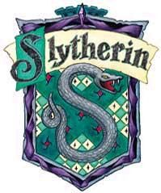

| Symbol |
description |
 |
Gryffindor values bravery, daring, nerve, and chivalry.Its emblematic animal is the lion,and its colours are scarlet and gold.Minerva McGonagall was the most recent Head of Gryffindor.The founder of the House was Godric Gryffindor. Gryffindor corresponds to the element of Fire. |
 |
Hufflepuff values hard work, dedication, patience, loyalty, and fair play.Its emblematic animal is the badger,and yellow and black are its colours. Pomona Sprout was the Head of Hufflepuff during 1991-1998.The founder of the House was Helga Hufflepuff.Hufflepuff corresponds to the element of earth. |
 |
Ravenclaw values intelligence, knowledge, curiosity, creativity and wit.Its emblematic animal is the eagle,and its colours are blue and bronze. The Ravenclaw Head of House in the 1990s was Filius Flitwick.The founder of the House was of Rowena Ravenclaw.Ravenclaw corresponds to the element of air. |
|  |
Slytherin House values ambition, leadership, self-preservation, cunning and resourcefulness and was founded by Salazar Slytherin.Its emblematic animal is the serpent,and its colours are emerald green and silver.Professor Horace Slughorn was the Head of Slytherin during the 1997–1998 school year, replacing Severus Snape.Slytherin corresponds roughly to the element of water. |